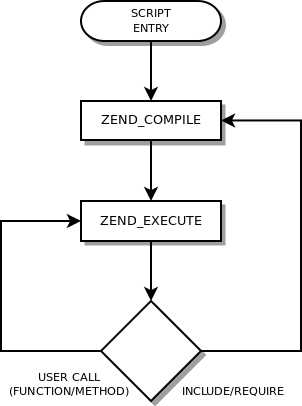

PHP
Basic Concepts

Presented by Sam Likins
PHP as a Social Activity
Topics
In this presentation we'll cover the following:
- Parsing – Reading & Interpreting of a program
- Basic Syntax – The necessary framework of the language
- Types – Value distinction
- Variables – A place to store a (read & write) value
- Constants – A place to store a (read-only) value
- Operators – Deriving a value from one or more other values
- Expressions – Creating the instructions
- Control Structures – From calculating to computing
- Functions – The macros of high level languages
- Language Specific (PHP) – Why we choose PHP
Parsing
Reading & Interpreting of a program
PHP is an interpreted language, not a compiled one:
- Takes input (file or stream) containing text and/or PHP instructions
- Creates output (stream), most commonly HTML
Since PHP 4: The PHP parser preprocesses the input to produce opcodes for processing by the Zend Engine.
Compiled vs. Interpreted
Programming Work-flow
Compiled
- Write human-readable source code
- Use a compiler to translate source code into machine code
- Correct compile-time errors
- Execute machine code with a debugger
- Correct run-time errors
- Repeat until successful…
Interpreted
- Write human-readable source code
- Execute source code for debugging with an interpreter
- Correct syntax & run-time errors
- Repeat until successful…
Preprocessing
A PHP script, from human-readable code
to an executing program.
- Preprocessor
- Lexical Analyzer (lexer)
- Reads in the human-readable source code
- Interprets the source code into machine-digestible tokens
- Passes the tokens to the Parser
- Parser
- Creates an operation code array (opcode / op array) from the tokens
– The op array is also known as an abstract syntax tree (AST)
- Passes the op array to the Executor
- Creates an operation code array (opcode / op array) from the tokens
- Lexical Analyzer (lexer)
- Executor
- Steps through the op array
- Executing each opcode in the Zend Engine
The Zend Engine (v2.0)
The Zend Engine simulates an ideal computer; the VM architecture provides hardware independent flexibility & portability. While a standard (x86) computer processor has 75 base operations, the Zend Engine has approximately 150 instruction (opcodes).
The Virtual Machine
- Keeps track of requests
- Processes scripting files
- Handles variables & resources
The VM opcode set includes simple logic & math operations, as well as complex operations such as include(). A VM is always slower than the host machine; some speed penalty is regained by performing complex instructions as a single VM operation.
The Execution of a PHP Script
This diagram indicates why PHP is an interpreter (run-time compiler). A true compiler can't compile during execution. PHP loads & compiles each file as it's required.
For more information on the Zend Engine:
Basic Syntax
The necessary framework of the language
- PHP Tags
- Escaping
- Instruction Separation
- Comments
PHP Tags
Opening & Closing tags
-
<?php&?>Always Available -
<script language="php">&</script>Always Available -
<?&?>Short Style -
<?=&?>Echo - Short Style -
<%&%>ASP Style -
<%=&%> Echo - ASP Style
The opening tag tells the interpreter to turn on
The closing tag tells the interpreter to turn off
Escaping
Instruction Separation
Comments
Types
Value distinction.
Variables
A place to store a (read & write) value.
Constants
A place to store a (read-only) value.
Expressions
Creating the instructions.
Operators
Deriving a value from one or more other values.
Control Structures
From calculating to computing.
The difference between a calculator & a computer is the ability to have conditional branching.